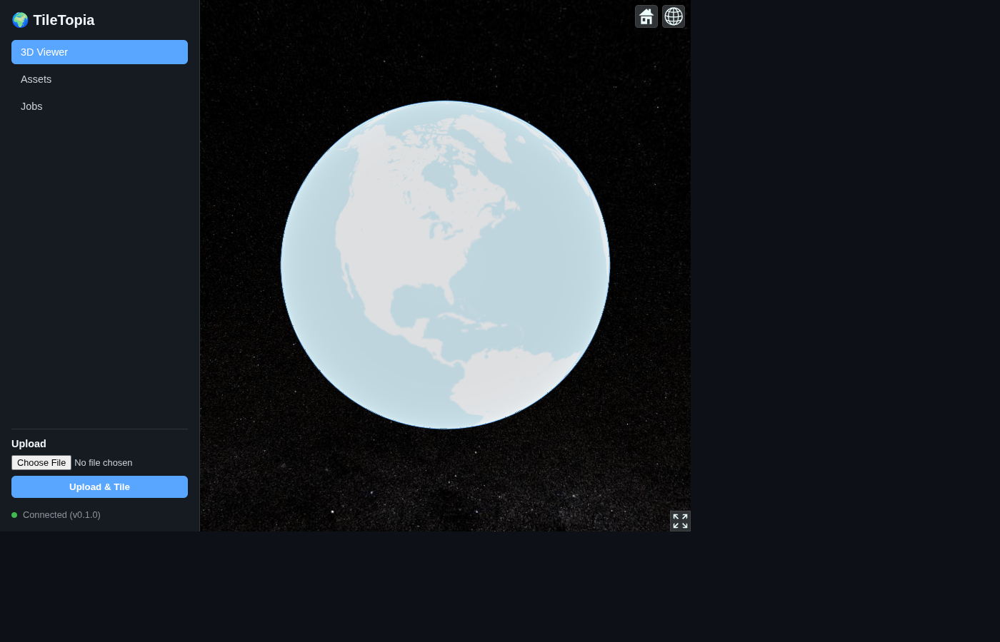
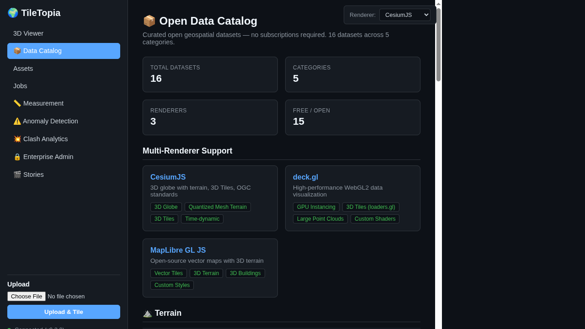

🌍 GeoLang
Fast open-source 3D Tiles server. Self-hosted Cesium Ion replacement for point clouds and quantized-mesh terrain.
7
Rust crates
737
Tests
$0
Per month
disk
Data limit
Fast open-source 3D Tiles server. Self-hosted Cesium Ion replacement for point clouds and quantized-mesh terrain.
What this server actually does. STAC, webhooks, scheduling, kriging and indoor mapping have mounted routes. They do not work, so they are not in the table.
| Capability | GeoLang | Cesium Ion | Mapbox | Google Maps | Bentley iTwin | Trimble Clarity | Potree |
|---|---|---|---|---|---|---|---|
| OGC 3D Tiles 1.1 point clouds | yes | yes | no | yes | yes | no | viewer |
| Terrain generation / bundles | yes | yes | yes | yes | no | no | no |
| Self-hosted / on-prem | yes | no | no | no | no | no | yes |
| Open source | AGPL-3.0 | no | no | no | no | no | yes |
| REST API | yes | yes | yes | yes | yes | yes | no |
| WebSocket presence / chat | yes | no | no | no | yes | no | no |
| 3D annotations | yes | no | no | no | yes | no | no |
| XYZ raster tiles | yes | no | yes | yes | no | no | no |
| Mesh / vector tiling | yes | yes | no | no | yes | no | no |
Ion is a hosted product. This is a binary you run. Scheduler, webhooks, STAC, COG, kriging, geoprocessing, indoor mapping and the rest of the premium routes are mounted and do not work. They are not scored.

CesiumJS dashboard streaming 3D Tiles from this server

Asset catalog in the dashboard
tiletopia/ ├── crates/ │ ├── tiletopia-core/ # Octree tiling engine, LOD, .pnts writer │ ├── tiletopia-server/ # Axum REST API, WebSocket, JWT auth │ ├── tiletopia-worker/ # Async tiling pipeline, job queue │ ├── tiletopia-ingest/ # Point cloud, DEM and mesh readers │ ├── tiletopia-terrain/ # Quantized mesh terrain generation │ ├── tiletopia-store/ # Storage: local + S3 + GCS + Azure │ └── tiletopia-cli/ # CLI binary (tile / serve / info) ├── gui/ # Web dashboard (Vite + CesiumJS) └── docs/ # This page
| Method | Endpoint | Description |
|---|---|---|
GET | /api/v1/health | Health check |
GET | /api/v1/assets | List all assets |
POST | /api/v1/assets | Upload asset (multipart) |
GET | /api/v1/assets/{id} | Asset details |
DELETE | /api/v1/assets/{id} | Delete asset |
POST | /api/v1/assets/{id}/tile | Start tiling job |
GET | /api/v1/assets/{id}/tileset.json | Serve tileset |
GET | /api/v1/assets/{id}/tiles/{path} | Serve tile |
WS | /api/v1/realtime/{room} | WebSocket presence, cursors, chat, view sync |
GET | /api/v1/terrain/layer.json | Quantized-mesh layer metadata |
GET | /api/v1/terrain/{z}/{x}/{y}.terrain | Quantized-mesh tile |
GET | /api/v1/terrain/bundles | Prebuilt terrain bundles |
GET | /api/v1/tiles/sources | XYZ tile sources (OSM proxy) |
GET | /api/v1/tiles/styles | MapLibre GL style JSON |
GET | /api/v1/analysis/xyz/{op}/{z}/{x}/{y}.png | Hillshade, slope or ndvi tiles |
GET | /metrics | Prometheus metrics |
Other /api/v1/* routes are mounted (STAC, COG, scheduler, webhooks, geoprocessing, API keys). They return demo data or ignore input. See the README "Not implemented" table.
Control the 3D viewer through conversation. No GIS expertise required.
"Fly to the Sydney Opera House" "Classify this point cloud by vegetation" "Show flood risk for warehouses near Manchester" "Compare elevation between these two sites" "Load the building survey and add markers"
| Command | Action |
|---|---|
fly_to | Animate camera to coordinates |
classify | Apply ASPRS classification colors |
add_geojson | Overlay GeoJSON layer |
load_tileset | Load 3D Tiles dataset |
add_marker | Place labeled pins |
screenshot | Capture current view |
Powered by sibyl, a Rust agent loop that calls an OpenAI-compatible LLM endpoint and keeps sessions in sqlite. It dispatches tool calls over HTTP to the GeoLang API, which runs 36 geospatial tools in-process (geocoding, isochrones, clustering, terrain profiles, environmental risk, routing). Sessions do not share memory, each one starts clean.
# Build from source git clone https://github.com/GeoLang/tiletopia.git cd tiletopia && cargo build --release # Tile a point cloud tiletopia tile --input scan.las --output ./tileset # Start server tiletopia serve --data-dir ./data --port 3000 # Docker docker run -p 3000:3000 -v ./data:/data tiletopia serve --data-dir /data
| Platform | Backend | Notes |
|---|---|---|
| macOS (Apple Silicon) | Metal via wgpu | M1–M5 |
| Linux/Windows (NVIDIA) | Vulkan via wgpu | Optional CUDA FFI |
| Linux/Windows (AMD/Intel) | Vulkan via wgpu | |
| Web | WebGPU | Browser-native |
# Build with GPU compute cargo build --release --features gpu
The official frontend for GeoLang — 50 tool panels (18 still marked preview), Cesium and MapLibre renderers with a deck.gl overlay and a Leaflet map tab, AI agent, and professional GIS tools.